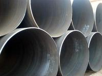

螺旋钢管价格暂停采购市场活跃度减弱

目前螺旋钢管市场情况依然严峻，成交仍然冷落，因而商家心态稍显无法，关于后市仍不看好。昔日各商家报价较为混乱，由于钢厂货源成绩，因而局部商家将价钱拉至低位欲促进市场成交，但也有局部商家报价坚硬。有鉴于此，估计前期定尺镀锌管市场价钱或将弱势持稳运转。据悉，近期商家反映钢厂发货状况仍然较差，其中普板资源缺货状况较为严重，由于补货速度较慢，商家库存仍然处于较低程度。市场方面，下游客户推销积极性仍然较差，资金面紧张仍然是次要缘由，加之需求状况低迷，少数商家对后市仍然看跌。本地现货成交普通，成交不够理想，价钱仍有暗降。自从上周价钱冲高回落后，定尺镀锌管市场成交恢复到600-800吨的正常成交量左近，即便低出亦难以吸引下游用户订货。目前商家多资金紧张，都在积极出货，降低库存、回流资金。估计，短期内市场震荡盘整能够较大。现货成交未见分明恶化，但价钱有所走强，低于3330元/吨的报价根本消逝。自从上周价钱冲高回落后，市场成交继续萎缩，即便低出亦难以吸引下游用户订货，市场高报低出的状况添加。局部商家表示，要应用这两天期货走势转好的时机，抓紧机遇出货，降低库存、回流资金。近期现货资源和钢厂直发次要流向天津市场，本地和周边市场消化增加，两头商暂时无法预期价钱调整空间的状况下，螺旋钢管价格。螺旋钢管亦是暂停推销，市场活泼度削弱。从上半年的状况来看，往年下游需求并未分明增长，钢企钢材销量与去年相差无几，但钢价却较去年大幅下跌，最终招致钢企营业支出与净利润下降。但是思索到原料铁矿石、废钢等产品跌幅也十分之大，从全行业来说，钢铁行业的利润程度还是添加的，只不过钢企之间的分化越来越分明。经济疲软、资金压力分明，钢市的内部环境犹如好转的毒瘤；外部也略显萧条。钢厂虽然借助本钱下降仍有盈利，然钢贸商盈余不改，制约了钢厂账面盈利的套现进度，一边急于利润套现，一边心死如僵，构成了以后钢铁行业市场心态恐慌性蔓延。现货钢价创八年来新低，钢铁炉料也创下5年来新低；期钢、期矿也创下上市以来最低，钢铁产业的一切，是乎都在8月份遭遇了滑铁卢；剖析师指出，虽然钢铁产业多项数据创新低螺旋钢管价格！但同时也正是这种低位程度，结构了少量的时机，市场最担忧的往往是一潭死水，有变化才无机会；因而，在螺旋钢管担忧当时，不烦剖析一下，超跌市场面前隐藏的机遇。
地址：河北沧州螺旋钢管生产基地
手机：186-3170-5801 == QQ791117